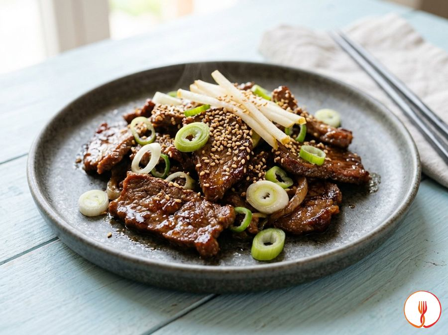

Manzo bulgogi
Manzo coreano marinato dolce e saporito.
Il Bulgogi è uno dei piatti più celebri della tradizione coreana, caratterizzato da sottili fette di manzo marinate. Il gusto oscilla tra il dolce della pera e il sapido della soia, regalando una carne tenerissima e aromatica. Perfetto per una cena conviviale.
Ingredienti
- Controfiletto di manzo500 g
- Pera (preferibilmente Nashi o Abate)150 g
- Salsa di soia75 ml
- Aglio15 g
- Zucchero di canna30 g
- Olio di sesamo tostato15 ml
- Semi di sesamo10 g
- Cipollotto fresco40 g
- Zenzero fresco grattugiato10 g
- Pepe nero macinato1 g
Allergeni
Glutine, Sesamo, Soia
Procedimento
- Avvolgere il controfiletto nella pellicola e riporlo in freezer per 20 minuti per facilitare il taglio; successivamente affettarlo trasversalmente alle fibre in fettine sottili di circa 3 mm.
- Pelare la pera e grattugiarla finemente in una ciotola capiente; aggiungere l'aglio schiacciato, lo zenzero grattugiato, la salsa di soia, lo zucchero di canna, il pepe e l'olio di sesamo.
- Unire le fettine di carne alla marinata, massaggiandole con cura affinché ogni pezzo sia coperto; lasciar riposare in frigorifero per almeno 30 minuti (ideale 2 ore).
- Tagliare i cipollotti a rondelle sottili, separando la parte bianca dalla parte verde che verrà usata per la guarnizione finale.
- Scaldare una padella in ghisa o un wok a fiamma molto alta fino a raggiungere il punto di fumo; aggiungere un filo d'olio se necessario (non previsto negli ingredienti per non alterare i grassi).
- Cuocere la carne in piccoli lotti per evitare che la temperatura scenda e la carne inizi a bollire; rosolare per 1-2 minuti per lato finché non appare ben caramellata (reazione di Maillard).
- Negli ultimi 30 secondi di cottura, aggiungere la parte bianca dei cipollotti e saltare velocemente.
- Servire immediatamente guarnendo con i semi di sesamo e la parte verde del cipollotto fresco.
Consigli
- Passate il manzo in freezer per venti minuti per ottenere tagli sottilissimi con estrema facilità.
- Lasciate marinare la carne per almeno un'ora affinché gli enzimi della pera rendano le fibre morbidissime.
- Cuocete poche fette alla volta in una padella rovente per evitare che la carne rilasci troppa acqua.
Varianti
- Provate la stessa marinatura con la spalla di maiale tagliata sottile per una versione alternativa.
- Aggiungete del peperoncino fresco tritato alla marinata se desiderate una nota piccante decisa.
Valori nutrizionali (stima)
| Per porzione (165 g) | Per 100 g | |
|---|---|---|
| Energia | 1307 kJ / 312 kcal | 792 kJ / 189 kcal |
| Proteine | 28 g | 17 g |
| Carboidrati | 13 g | 8.1 g |
| di cui zuccheri | 12 g | 7.0 g |
| Grassi | 16 g | 9.6 g |
| di cui saturi | 5.2 g | 3.2 g |
| Fibre | 1.4 g | 0.8 g |
| Sale | 3.2 g | 1.9 g |
Valori stimati con l'AI su dati medi CREA / USDA: sono indicativi e non sostituiscono il parere di un medico o di un nutrizionista.
Apri la ricetta nell'app per la lista della spesa, le schede ingredienti e i negozi vicini.